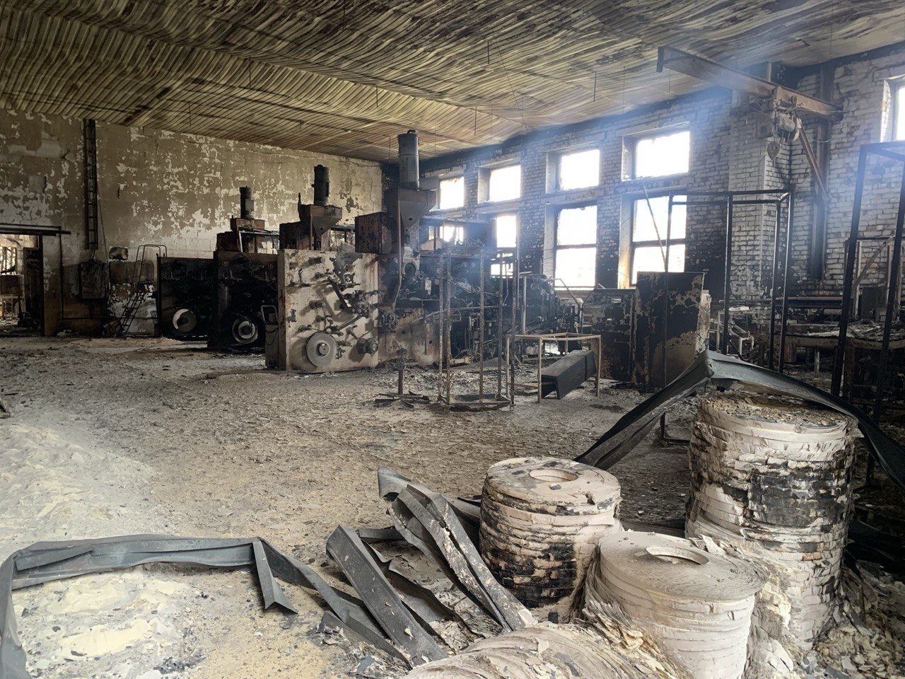
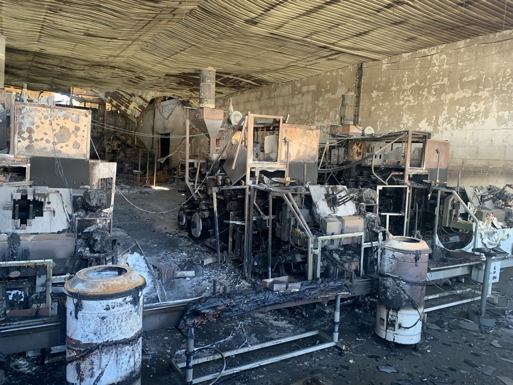

Хронология восстановления (4 месяца)
Месяц 1: Защита доходов
Первоочередной задачей было сохранение доли рынка и доходов. Мы оперативно наладили трансграничный импорт готовой продукции, чтобы обеспечить наших клиентов товаром, несмотря на потерю собственных производственных мощностей.

Месяц 2: Гибкий аутсорсинг
Для стабилизации поставок мы перешли к модели гибкого аутсорсинга (ко-пакинг). Были найдены надежные сторонние подрядчики, которые помогли нам поддержать объемы выпуска продукции под нашим брендом.

Месяц 4: Полное операционное восстановление
Кульминация наших усилий: оборудование, привезенное из Шри-Ланки (IMA C23), было успешно доставлено, отремонтировано и введено в эксплуатацию. Мы перезапустили собственное производство, вернув полный контроль над процессами и качеством.